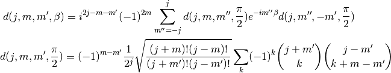

Wigner D Function¶
The Wigner  function gives the matrix elements of the rotation operator
function gives the matrix elements of the rotation operator  in the -representation. For the Euler angles
in the -representation. For the Euler angles  ,
,  ,
,  ,
the function is defined as:
,
the function is defined as:
Where the rotation operator is defined using the
 -
- - convention:
- convention:
Here is the projection of the total angular momentum on an
 -axis. The is the eigenstate of the operators and .
Using the fact that , we can
see that the Wigner function can always be written using the Wigner
small-
-axis. The is the eigenstate of the operators and .
Using the fact that , we can
see that the Wigner function can always be written using the Wigner
small- function as:
function as:
where

We can use the following relations to evaluate :

Derivation¶
The small- function formula above can be derived from the following formula:
by substituting
into
This follows from:
let the polynomial be:
and (using binomial theorem in the process):
![{\bf P_u} f_m(\epsilon, \zeta) = f_m(a^*\epsilon - b\zeta,
b^*\epsilon + a\zeta) =
{(a^*\epsilon - b\zeta)^{j+m} (b^*\epsilon + a\zeta)^{j-m} \over
\sqrt{(j+m)! (j-m)!}}
=
=\sum_{k=0}^{j+m} \sum_{k'=0}^{j-m} (-1)^k
{\sqrt{(j+m)!(j-m)!}\over k! k'! (j+m-k)! (j-m-k')!}
a^{k'}
{a^*}^{j+m-k}
b^k
{b^*}^{j-m-k'}
\epsilon^{2j-k-k'} \zeta^{k+k'}
=
=
\sum_{m'}
\sum_k (-1)^k
{\sqrt{(j+m)! (j-m)! (j+m')! (j-m')!} \over
(j-m'-k)! (j+m-k)! k! (k+m'-m)! }
a^{j-m'-k}
{a^*}^{j+m-k}
b^k
{b^*}^{k+m'-m}
f_{m'}(\epsilon, \zeta)](../../_images/math/bd8950829b643206f89e7208b0cea965ee16a39d.png)
And it is the coefficient of .